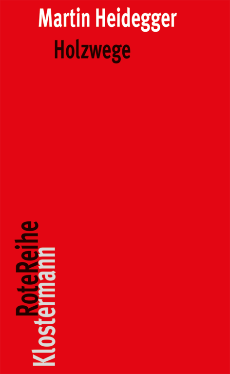
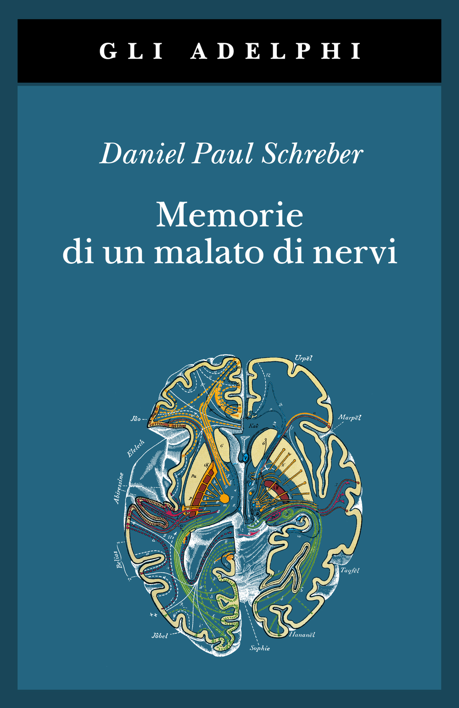
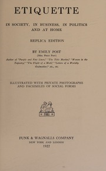

54:06 · 6 OPERE
L'ordine e la connessione delle cose è l'ordine e la connessione delle idee.
Il filo del discorso
Una testimonianza sul recupero della missione Gemini XII introduce il tema del rapporto con i fatti e dei limiti del dubbio. Per il relatore, la negazione automatica del discorso dominante non garantisce autonomia: occorre studiare e distinguere ciò che si sa da ciò che si immagina. La critica alla divisione dei saperi conduce alla contrapposizione fra conoscenza profonda, utilità commerciale e prestigio. Il libro di Gates sulla preparazione pandemica è discusso con toni polemici, mentre le fotografie dello studio di Freud offrono una immagine della cultura del lavoro e dei libri. Nella parte finale Emily Post permette di contestare la presunzione che la ricchezza renda competenti in ogni campo; Pavia e la citazione di Spinoza riportano il discorso alla umiltà della ricerca e alla logica. La scheda conserva questo percorso, senza trasformare gli insulti in diagnosi e senza confondere dimostrazione matematica, verifica empirica e testimonianza personale.
I libri nel discorso

Holzwege (Sentieri interrotti; Sentieri erranti nella selva)
Copertina: Opera originale 1950. Immagine della nona edizione tedesca invariata del 2015, a cura di Friedrich-Wilhelm von Herrmann, Klostermann Rote Reihe 73, VIII e 380 pagine, ISBN 9783465042365. L’esemplare del relatore e una sua traduzione italiana non sono determinati.
Immagine autentica dell’opera, controllata visivamente; l’edizione di riferimento non è attribuita al filmato.
Heidegger e Sentieri nel bosco espliciti, identificati con Holzwege.
Passaggio 13:22 ↗ · Fonti e libro ↗How to Prevent the Next Pandemic
Identificazione probabile
Copertina: Knopf, rilegato, 3 maggio 2022, 304 pagine, ISBN 9780593534489. Copertina autentica della edizione americana. Non si confonde il formato rilegato con la brossura 2023 o con la edizione britannica Allen Lane.
Immagine autentica dell’opera, controllata visivamente; l’edizione di riferimento non è attribuita al filmato.
Libro rilegato Gates, 2022, argomento e passi letti: probabile How to Prevent the Next Pandemic; titolo non pronunciato integralmente.
Passaggio 23:17 ↗ · Fonti e libro ↗
Memorie di un malato di nervi
Copertina: Denkwürdigkeiten eines Nervenkranken, 1903. Copertina della traduzione italiana Adelphi, Gli Adelphi 310, 2007, 536 pagine e una tavola, a cura di Roberto Calasso, traduzione di Federico Scardanelli e Sabina de Waal, ISBN 9788845921643. La precedente edizione italiana Adelphi del 1974 è distinta dalla ristampa raffigurata.
Immagine autentica dell’opera, controllata visivamente; l’edizione di riferimento non è attribuita al filmato.
Memorie di Schreber esplicite; titolo completo riscontrato nel catalogo editoriale.
Passaggio 27:19 ↗ · Fonti e libro ↗Sigmund Freud. Wien IX. Berggasse 19
Identificazione probabile
Copertina: Fotografie realizzate da Edmund Engelman nel maggio 1938. Immagine del volume Brandstätter in tedesco, a cura di Monika Pessler, 160 pagine, ISBN 9783850338820, dal catalogo corrente. Non si attribuiscono a questa ristampa le 153 pagine del precedente volume Basic Books 1976 o un acquisto preciso del relatore.
Copertina autentica editoriale vista interamente, con la targhetta Prof. Dr. Freud e il titolo. Diverse edizioni hanno raccolto le fotografie del 1938: l’immagine illustra quella dichiarata, non dimostra la tiratura mostrata nel video. La fotografia e il volume non sono opere scritte da Freud.
Libro delle fotografie di Berggasse 19 e studio di Freud: probabile raccolta di Engelman; edizione esatta non identificata.
Passaggio 39:03 ↗ · Fonti e libro ↗
Etiquette in Society, in Business, in Politics and at Home
Frontespizio della Replica Edition, originale indicato 1922: Opera di Emily Post pubblicata da Funk & Wagnalls nel 1922. Immagine del frontespizio di una ristampa anastatica che reca la dicitura Replica Edition e riproduce l’indirizzo originale New York and London, 1922. La data effettiva della ristampa non è accertata: il 1922 è quello del testo riprodotto, non una data garantita per l’oggetto fotografato. Nessun ISBN moderno attribuito.
Frontespizio autentico della scansione visto interamente: titolo, autrice, Replica Edition e indicazione Funk & Wagnalls 1922 leggibili. Non è la copertina originaria e non è una moderna edizione aggiornata dagli eredi Post.
Emily Post, titolo inglese e anno 1922 espliciti; passo riconosciuto nel capitolo VII.
Passaggio 44:20 ↗ · Fonti e libro ↗
Etica
Identificazione probabile
Copertina: Laterza · Biblioteca Filosofica · 2009 · traduzione di Sergio Landucci
Immagine autentica dell’opera, controllata visivamente; l’edizione di riferimento non è attribuita al filmato.
Spinoza e formula sulla connessione delle idee e delle cose: Etica II, proposizione 7, titolo non pronunciato.
Passaggio 51:21 ↗ · Fonti e libro ↗